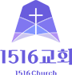

오카야마 리버사이드 교회
비전트립 가이드북
트립 개요
| 항목 | 내용 |
|---|---|
| 목적 | 선교지 사역을 체험하며 교회와 자신의 삶에 적용할 점을 발견함 |
| 방문 교회 | 일본 오카야마 리버사이드교회 (담임목사 마키) · 교회 홈페이지 |
| 교회 주소 | 주소 확인 필요 · ☆ 구글 맵에서 교회 위치 보기 (위치 확인 후 ☆ 버튼으로 저장) |
| 기간 | 2026년 11월 13일(금) ~ 11월 16일(월), 3박 4일 |
| 프로그램 |
|
| 회비 | 1인 140만 원 |
| 참가 인원 | 총 8명 |
준비모임
| 일 | 월 | 화 | 수 | 목 | 금 | 토 |
|---|---|---|---|---|---|---|
| 24 | ||||||
| 25회비 | 26 | 27 | 28 | 29 | 30 | 3107:30~ |
| 일 | 월 | 화 | 수 | 목 | 금 | 토 |
|---|---|---|---|---|---|---|
| 1 | 2 | 3 | 4 | 518:30~ | 6 | 707:30~ |
| 8 | 9 | 10 | 11 | 1218:30~ | 13 | 14 |
| 15 | 16 | 17 | 18 | 19 | 20 | 21 |
| 22 | 23 | 24 | 25 | 26 | 27 | 28 |
| 29 | 30 |
준비모임비전트립 (11/13–16)전달사항
전달사항
- 10/24(토) · 여권정보 입력 (오늘까지). 공지사항 댓글 또는 이찬호 형제님께 개별 전달
- 10/25(일) · 회비 납입 1인 140만 원 (10/25까지)
준비모임 장소: 1516교회 헤이븐
오카야마 소개
오카야마는 일본 서부 주고쿠 지방에 있는 도시로, 복숭아와 청포도(마스카트)가 유명합니다. 도심에는 오카야마 성과 일본 3대 정원 중 하나인 고라쿠엔이 있고, 근처 구라시키에는 옛 상가 거리가 남아 있습니다. 자세한 정보는 오카야마 관광 공식 사이트에서 볼 수 있습니다.
아래 장소는 참고용입니다. 활동으로 확정되면 일정에 반영합니다.
맛집
참고용 정보입니다. 아래 요일 구성, 일정, 인원(9~12명 기준)은 이 트립의 확정 일정과 다를 수 있습니다. 참고 환율: 100엔 ≒ 940원 기준이며, 실제 환율에 따라 달라질 수 있습니다. 가격은 메뉴 기준 대략적인 금액입니다.
Shokudo Yamato (식당 야마토)
오카야마에서만 맛볼 수 있는 '데미카츠동'(데미그라스 소스 돈가스 덮밥)의 원조격 식당입니다. 현지인들이 줄 서서 먹는 곳입니다.
- 추천: 데미카츠동 (중 930엔~), 중화소바 (880엔~)
- 가격: 930~1,300엔 (약 8,700~12,200원)
- 단체: 식당이 좁아 12명이 한 번에 들어가기 어렵습니다. 4명씩 3개 조로 나눠 입장하세요.
Ebimeshiya Aoe (에비메시야 아오에)
오카야마의 명물 '에비메시'(새우밥) 전문점입니다. 검은 볶음밥이지만 짜지 않고 고소하며, 카레·케첩·캐러멜 소스 풍미가 납니다. 해산물을 드시지 않아도 부담 없습니다.
- 추천: 에비메시 단품 (900엔~), 에비메시 & 크림 고로케 세트 (1,280엔~)
- 예산: 1,500~2,500엔 (에비메시·양식 기준, 금·토 저녁 예비 후보)
- 전화·당일 영업·예약 조건: 미확인
- 이동: 오카야마역에서 택시로 10~15분. 단체 이동은 택시를 추천합니다.
Azuma Zushi (아즈마 스시)
100년 전통의 가게로, 오카야마 향토 요리 '바라즈시'(해산물과 채소를 밥 위에 뿌린 스시)로 유명합니다. 오카야마역 2층 산스테(Sun Station Terrace) 안에 있어 찾기 쉽습니다.
- 추천: 오카야마 바라즈시 (2,500엔~), 런치 니기리 세트 (1,500엔~)
- 비생선류 선호자는 익힌 새우·장어·계란 초밥 단품 주문이 가능합니다.
- 가격: 2,000~3,500엔 (약 18,800~32,900원)
- 위치: 산스테 2층, 11:00 개점
- 전화: +81-86-227-7337 (8명 예약 가능 여부·메뉴 사전 결정·12:15 퇴점 가능 여부 문의)
- 단체: 점심 피크 전인 11:30 방문을 추천합니다.
Teppan Ku-ya (철판구이 쿠야)
오카야마의 고급 와규 '치야규(Chi-ya Beef)'를 맛볼 수 있는 철판구이 집입니다.
- 추천: 계절 디너 코스 (치야규 스테이크 포함)
- 가격: 인당 6,000~8,500엔 (약 57,000~80,000원)
- 단체: 9~12명은 반드시 사전 전화 예약이 필요합니다.
Cafe Moyau (카페 모야우)
아사히가와 강변 뷰가 좋은 카페입니다.
- 메뉴: 커피 (550엔~), 케이크 세트 (1,000엔~)
- 가격: 약 5,200~9,400원 (메뉴 기준)
Aji no Yayoi (아지노 야요이)
편안하게 식사하고 싶을 때 추천하는 일본 가정식 식당입니다.
- 추천: 정식(Teishoku) 세트 (850~1,100엔)
- 가격: 1,000엔 내외 (약 9,500원)
Okonomimura (오코노미무라)
'오코노미야키 마을' 건물입니다. 히로시마 스타일은 면이 들어갑니다. 건물 안에 여러 가게가 있어 팀원들이 흩어져서 드셔도 됩니다.
- 추천: 고기 & 계란(Niku-tama) 소바 (810~900엔) + 치즈·파 토핑 추가
- 가격: 900~1,500엔 (약 8,500~14,000원)
- 단체: 사라시나(Sarashina) 같은 유명 가게는 좁습니다.
Fukuzushi (후쿠즈시)
자체 식사 1안입니다. 점심에 이용하면 저녁은 가츠규로 정해 중복을 줄입니다.
- 가격: 점심 2,500~4,000엔, 저녁 3,000~5,000엔
규카츠 교토 가츠규 산스테점 (Katsugyu)
토요일 자체 저녁 후보입니다.
- 가격: 2,000~3,500엔
- 위치: 산스테 남관 1층, 45석
- 영업시간: 11:00~22:00 (주문 마감 21:30)
- 전화: +81-86-201-2080 (8명 예약·분산 착석·제공 시간 문의)
와코 이온몰점 (Wako Aeon Mall)
이온몰 7층 식당가입니다.
- 가격: 1,500~2,500엔 (약 14,100~23,500원)
- 영업시간: 11:00~22:00
- 전화: +81-86-227-7818 (8명 이용·예약·분산 착석·퇴점 목표 문의)
가라후네야 CAFÉ
주문 10분, 교제 30분, 계산 5분을 잡습니다.
- 위치: 산스테 남관 1층
- 영업시간: 11:00~22:00 (라스트 오더 21:00)
- 전화: +81-86-201-2728 (주일 20:45 · 8명 45분 이용, 메뉴별 주문 마감 문의)
- 음료 700~1,000엔, 디저트 포함 1,200~1,800엔 (1인 기준)
스타벅스 이온몰 오카야마 1층점
5층점과 구분해서 찾습니다. 좌석 예약을 전제로 하지 않으며, 만석이면 테이크아웃합니다.
- 영업시간: 10:00~21:00
- 음료 예산: 600~1,000엔
- 전화: +81-86-238-7621
일정
"확인 필요"로 표시된 항목은 아직 확정되지 않았습니다. 날짜를 누르면 접거나 펼칠 수 있습니다.
13일 (금)
| 시간 | 프로그램 | 장소 / 비고 |
|---|---|---|
| 06:00 | 제2터미널 집결 | 각자 |
| 06:00~ 07:30 | 탑승수속 & 아침식사 | |
| 08:45~ 10:30 | 인천공항 - 다카마쓰 이동 | 에어서울 RS0297 |
| 10:30~ 11:00 | 입국 및 짐 찾기 | 교회버스 픽업 장소 확인 필요 |
| 11:00~ 12:30 | 교회버스로 다카마쓰공항 ☆ 지도 → 오카야마 이동 | 약 1시간 30분 예상 |
| 12:30~ 13:30 | 리버사이드교회 ☆ 지도 도착예배 | 장소·시간 확인 필요 |
| 13:30~ 14:00 | 호텔 이동 및 짐 보관 | 교회버스 · 체크인은 15:00 이후 |
| 14:00~ 14:45 | 와코 이온몰점 ☆ 지도 점심 (와코 이온몰점 카드, 7층) | 1안 기준 · 확정 필요 |
| 14:45~ 15:15 | 스타벅스 ☆ 지도 (1층) | 테이크아웃 가능 · 확정 필요 |
| 15:15~ 16:05 | 호텔 복귀·체크인, 환복, 선물 점검 | 예약 대표자 객실 배정 안내 · 16:05 로비 집결 · 선물 포장이 필요하면 2안 적용 |
| 16:30~ 18:00 | 청소년 생활관 이동 및 방문 | |
| 18:00~ 19:00 | 저녁식사 | 제공 식사가 있으면 이용. 자체 해결 시 1안 가츠규 (2,000~3,500엔), 2안 아즈마 스시 (☆ 구글 맵, 2,000~3,500엔). 이동 후 입장 시각 조정 |
| 19:00~ 20:00 | 호텔 복귀 | |
| 20:00~ 21:00 | 나눔 / 조별 교제 | |
| 2안 (교회 선물 포장이 필요한 경우): 13:30~14:15 교회 포장·보관 → 14:15~14:40 호텔 방면 이동·짐 보관 → 14:40~15:25 와코 점심 → 15:25~16:05 체크인·환복 → 16:05 집결. 교회 공간 사용 협의와 작업량 확인이 필요하며, 커피는 생략합니다. | ||
14일 (토)
| 시간 | 프로그램 | 장소 / 비고 |
|---|---|---|
| 07:30~ 08:30 | 호텔 조식 | 호텔 식당 · 조식 포함, 필요한 식사 취향 확인 |
| 08:30~ 09:30 | QT | 호텔 식당 · 작년처럼 소그룹 테이블 진행 참고, 호텔 이용 허용 범위 확인 |
| 09:30~ 10:00 | 정비와 기업 이동 | 교회 차량 집결 장소 공유 |
| 10:00~ 12:00 | 기업탐방 (음식물 처리공장, 아구리가든 ☆ 지도 등) | 올해 방문처·순서 확인 |
| 12:00~ 13:00 | 점심식사 | 자체 식사 1안 후쿠즈시, 2안 아즈마 스시 (시내 복귀가 가능한 경우 적용) |
| 13:00~ 18:00 | 산업시찰 | 기존 시간 유지, 관광·쇼핑은 임의로 추가하지 않음 |
| 18:00~ 19:00 | 저녁식사 | 자체 식사 1안 후쿠즈시, 2안 가츠규 (시찰 종료 장소와 준비 장소에 따라 조정) |
| 19:00~ 21:00 | 주일사역 준비 | 장소 확인 필요 · 외부 저녁 이동과 충돌 시 현지 인근 식사 우선 |
| 21:00~ 22:00 | 나눔 / 조별 교제 | |
| 식당 후보: 1안 후쿠즈시 ☆ 지도 (점심 2,500~4,000엔, 저녁 3,000~5,000엔), 2안 아즈마 스시 ☆ 지도 (점심 2,000~3,500엔) · 가츠규 ☆ 지도 (저녁 2,000~3,500엔). 후쿠즈시 ☆ 지도를 점심에 이용하면 저녁은 가츠규 ☆ 지도로 중복을 줄입니다. 현지 제공 식사가 확정되면 외부 식사 후보는 예비안으로 바꿉니다. 관광·카페 예비안: 1안은 기업·아구리가든 ☆ 지도 안내 구역을 현지 프로그램 안에서 둘러보는 것입니다. 2안은 산업시찰이 일찍 끝나 역 서쪽으로 돌아오는 경우 호칸초 상점가 ☆ 지도를 20~30분 걷는 코스로, 이동을 제외하고 40분 이상 여유가 있을 때만 적용합니다. 카페는 현지 휴식시간이 1안이고, 역 주변 자유시간이 있을 때만 가라후네야 ☆ 지도를 2안으로 씁니다. 쇼핑은 산스테 ☆ 지도의 간식·기념품이 1안, 돈키호테 역앞점 ☆ 지도은 개인 자유시간이 있을 때의 2안입니다. | ||
15일 (주일)
| 시간 | 프로그램 | 장소 / 비고 |
|---|---|---|
| 07:30~ 08:30 | 호텔 조식 | 호텔 식당 · 조식 포함 |
| 08:30~ 09:00 | QT | 호텔 식당 |
| 09:00~ 09:45 | 정비와 출발 | 교회 출발 |
| 09:45~ 10:30 | 교회 이동과 예배 준비 | 현지 교회 안내에 따름 |
| 10:30~ 12:00 | 주일예배 | 특순·헌금 준비 |
| 12:00~ 13:00 | 점심과 교제 | 교회 제공 시 이용. 자체 식사 1안 아즈마 스시, 2안 와코. 오후 복귀 동선 확인 |
| 13:00~ 15:00 | 팀 모임 | 가이드북상 확인 필요 |
| 15:00~ 18:00 | 오후예배 | 설교, 찬양 |
| 18:00~ 19:20 | 이동과 저녁 | 1안 와코, 2안 가츠규. 현지 저녁 제공 시 이동 축소 |
| 19:20~ 19:40 | 니시가와 ☆ 지도 방면 이동 | 산책 시작·종료 위치를 구글맵에 따로 저장 |
| 19:40~ 20:10 | 니시가와 ☆ 지도 산책과 사진 (땅밟기) | 일부 구간 왕복. 지나치게 긴 코스는 제외 |
| 20:10~ 20:25 | 기도와 짧은 나눔 | 다른 보행자의 통행을 막지 않는 곳 |
| 20:25~ 20:45 | 산스테 ☆ 지도 방면 이동 | 카페 입장 전 인원 확인 |
| 20:45~ 21:30 | 가라후네야 CAFÉ | 주문 10분·교제 30분·계산 5분. 라스트 오더 21:00 (20:45 입장 시 주문 가능) |
| 21:30~ 22:00 | 호텔 복귀와 정비 | 22시 전체 모임에 맞춰 복귀 |
| 22:00~ 23:00 | 전체 나눔 | |
| 2안과 변경 기준: 가벼운 비에는 산책을 줄이고 카페로 일찍 이동합니다. 강한 비에는 산책 대신 카페 휴식과 허용된 공간의 기도·나눔을 검토합니다. 카페에서 8명 한 테이블이 어려우면 4명씩 분산 착석을 문의하고, 입장 대기가 10분을 넘거나 주문 마감이면 테이크아웃 또는 호텔 복귀로 바꿉니다. 카페는 대화·휴식용이며 단체 기도 장소로 가정하지 않습니다. 호텔 단체 모임 공간은 확보된 것으로 전제하지 않습니다. 식사·카페 예상 (1인 기준): 음료 700~1,000엔, 디저트 포함 1,200~1,800엔, 저녁 와코 1,500~2,500엔, 가츠규 ☆ 지도 2,000~3,500엔. 앞선 날 이용한 식당과 중복되면 대안으로 교체합니다. 19시를 넘겨 외부 식사를 하면 땅밟기 앞부분을 조정하는 제안이므로, 인솔자와 먼저 협의합니다. | ||
16일 (월)
| 시간 | 프로그램 | 장소 / 비고 |
|---|---|---|
| 07:30~ 08:00 | 호텔 조식 | 호텔 식당 · 조식 30분 |
| 08:00~ 08:30 | QT | 호텔 식당 · QT 30분 |
| 08:30~ 09:10 | 체크아웃·짐 보관 | |
| 09:10~ 09:20 | 택시 탑승과 인원 배정 | |
| 09:20~ 09:50 | 고라쿠엔 ☆ 지도 정문 이동·입장 준비 | 2안: 오카야마성 ☆ 지도 이동·입장 준비 |
| 09:50~ 10:30 | 고라쿠엔 ☆ 지도 정문 입장 후 연못·잔디·성 방향 경관 짧게 관람 | 상세 도보 경로와 택시 재탑승 지점은 현장 안내도로 확정. 2안: 오카야마성 ☆ 지도 내부 관람 40분 제한 |
| 10:30~ 11:00 | 사자나미 찻집 ☆ 지도 티타임 (11월 09:00~16:30) | 커피 500엔·말차 과자 세트 700엔. 8명 30분 이용 가능 여부 먼저 문의. 2안: 우조 카페 ☆ 지도 |
| 11:00~ 11:30 | 출구 이동·택시로 역 복귀 | 2안: 택시로 이온몰 이동 |
| 11:30~ 12:15 | 점심 | 1안 아즈마 스시, 2안 와코 이온몰점 |
| 12:15~ 12:30 | 구매 시간 | 1안 산스테 ☆ 지도 지역 과자, 2안 이온몰 필요한 구매 |
| 12:30~ 12:50 | 호텔 이동·짐 회수 | 교회버스 |
| 12:50~ 13:00 | 공항 차량 탑승 | |
| 13:00~ 14:30 | 다카마쓰공항 ☆ 지도 이동 예정 | 실제 소요시간 확인 필요 |
| 14:30~ 16:30 | 수속 후 이른 저녁과 출국 | 15:00~15:30 가능 시 공항 1안 하야시야 ☆ 지도, 2안 사누키 멘교 ☆ 지도. 수속·보안검색 우선 |
| 16:50~ 18:35 | 다카마쓰 - 인천 이동 | 진에어 LJ300 |
| 월요일 관광 선택 기준: 1안은 고라쿠엔 ☆ 지도과 사자나미 찻집 ☆ 지도, 2안은 오카야마성 ☆ 지도과 우조 카페 ☆ 지도 중 하나를 고릅니다. 13시 출발과 14시 30분 공항 도착은 가이드북 배치이며, 실제 차량 이동시간은 아직 정해지지 않았습니다. 기사 확인 후 더 이른 출발이 필요하면 관광·카페·쇼핑을 줄입니다. 출발시간을 지키는 변경 순서: 기념품 쇼핑 생략 → 카페 축소·생략 → 관광 단축. 점심 식당이 45분 내 이용을 확인해 주지 않으면 대체 식사로 바꿉니다. 강한 비나 공항 조기 출발이면 관광을 생략하고 역·이온몰의 이른 식사와 구매만 진행합니다. 후쿠다 찻집은 11시 개점이라 이번 오전 코스에서 제외했습니다. | ||
교통과 숙소
항공편 (인천 - 다카마쓰): 가는 편은 에어서울 RS0297(인천공항 T2 → 다카마쓰공항 T1), 오는 편은 진에어 LJ300(다카마쓰공항 T1 → 인천공항 T2)입니다. 위탁수화물 각 15kg.
| 구분 | 날짜 | 출발 | 도착 | 소요 |
|---|---|---|---|---|
| 출발 (인천 - 다카마쓰) | 11/13(금) | 08:45 | 10:30 | 105분 |
| 리턴 (다카마쓰 - 인천) | 11/16(월) | 16:50 | 18:35 | 105분 |
- 현지 이동: 교회 차량으로 이동합니다. 가는 날 다카마쓰공항에서 픽업하고, 오는 날 숙소에서 공항까지 이동합니다. 세부 시간은 확인 필요. 작년에는 교회가 버스, 운전자, 인솔자를 4일간 준비해 주셨고 비용은 약 20.3만 엔(약 185만 원)이었습니다.
- 숙소: 아파호텔 오카야마에키마에 (APA HOTEL OKAYAMA-EKIMAE) 공식 홈페이지. 교회에서 버스로 15분. 예약 완료: 11/13(금) ~ 11/16(월), 조식 포함.
- 주소: 1 Chome-3-12 Shimoishii, Kita Ward, Okayama
- 전화: +81 86-236-3111
예산
예상 금액과 지출 현황 기준입니다. 차액은 예상 금액에서 지출을 뺀 값이며, 음수는 예상보다 많이 쓴 금액입니다.
| 항목 | 예상(원) | 단가(원) | 수량 | 지출(원) | 차액(원) |
|---|---|---|---|---|---|
| 항공료 | 3,200,000 | 466,500 | 8 | 3,732,000 | -532,000 |
| 숙박비 | 2,240,000 | 340,050 | 8 | 2,720,400 | -480,400 |
| 여행자 보험 | 32,000 | 0 | 32,000 | ||
| 사례비 (버스) | 1,300,000 | 0 | 1,300,000 | ||
| 주유비 | 600,000 | 0 | 600,000 | ||
| 헌금 | 1,800,000 | 0 | 1,800,000 | ||
| 식대 | 1,600,000 | 0 | 1,600,000 | ||
| 간식 | 240,000 | 0 | 240,000 | ||
| 예비비 | 188,000 | 0 | 188,000 | ||
| 합계 | 11,200,000 | 6,452,400 | 4,747,600 | ||
| 회비 수입 | 11,200,000 (1인 1,400,000 × 8인) | ||||
| 잔액 | 4,747,600 (회비 수입 − 지출 합계) | ||||
준비물과 유의사항
준비물 목록과 유의사항은 아직 정해지지 않았습니다. 확정되면 추가합니다.
연락처
| 역할 | 이름 |
|---|---|
| 인솔자 | 이준인 목사님 |
| 팀장 | 조남준 |
| 회계 | 이민섭 |
| 총무 | 이찬호 |
| 액티비티 | 조영근 |
| 서기 (영상, 사진 기록) | 이제헌 |
| 블레싱(QT) & 가이드북 | 강병도 |
| 특순 | 이규현 |
전화번호는 추후 추가합니다.
자료실
자료 업로드와 의견 남기기는 이 페이지만으로는 할 수 없습니다. 아래 도구를 함께 쓰세요.
- 사진과 영상 업로드: 구글 드라이브 자료실 열기
- 여행 수기 쓰기: 여행 수기 문서 열기
- 의견과 질문 남기기: 의견과 질문 폼 열기